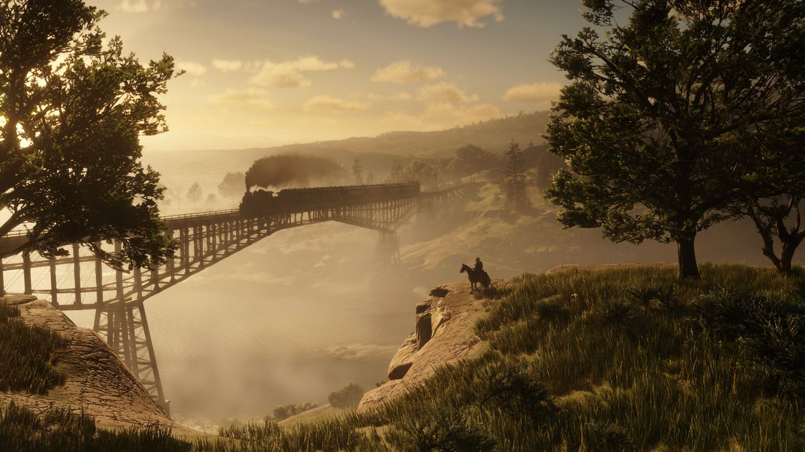
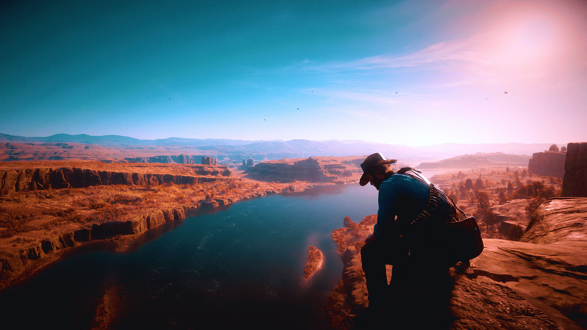

Desenvolvedor e Publicador
Red Dead Redemption 2 foi desenvolvido pela Rockstar Games, uma das principais desenvolvedoras de jogos da indústria, famosa por suas narrativas profundas, mundos abertos vastos e detalhados, e jogabilidade inovadora. A Rockstar Games é uma subsidiária da Take-Two Interactive.
Gênero
Red Dead Redemption 2 é um jogo de ação e aventura em mundo aberto, mas também incorpora elementos de RPG, simulador de sobrevivência e jogo de tiro em terceira pessoa. Ele oferece uma experiência imersiva no Velho Oeste americano, repleta de missões emocionantes, atividades secundárias e interações com um vasto elenco de personagens.
Enredo
O enredo de Red Dead Redemption 2 é uma prequela do primeiro jogo da série, situado em 1899. Ele segue Arthur Morgan, um membro da gangue Van der Linde, liderada por Dutch van der Linde. A história acompanha a gangue enquanto eles fogem após um assalto a banco mal-sucedido e enfrentam pressão das autoridades, conflitos internos e desafios da vida no Velho Oeste.
Plataformas
Red Dead Redemption 2 foi lançado inicialmente para PlayStation 4 e Xbox One em 2018, oferecendo uma experiência de alta qualidade nos consoles de última geração. Em 2019, o jogo foi portado para PC, proporcionando aos jogadores de computador a oportunidade de explorar o vasto mundo do jogo com gráficos aprimorados e recursos específicos para PC.
Gráficos e Motor Gráfico
Red Dead Redemption 2 é aclamado por seus gráficos impressionantes, impulsionados pelo motor gráfico RAGE da Rockstar. O jogo apresenta uma gama impressionante de detalhes visuais, incluindo paisagens deslumbrantes, animações realistas de personagens e efeitos climáticos dinâmicos, que contribuem para uma experiência imersiva.
Tecnologias Avançadas
O jogo incorpora diversas tecnologias avançadas para elevar a imersão e a qualidade visual. Isso inclui suporte a HDR para uma gama dinâmica de cores, áudio em 3D para uma experiência sonora envolvente, efeitos de física realistas e um sistema de inteligência artificial sofisticado para os NPCs.
Red Dead Online
Além da campanha para um jogador, Red Dead Redemption 2 apresenta um modo online robusto, conhecido como Red Dead Online. Neste modo, os jogadores podem formar gangues, participar de missões cooperativas, competir em desafios e eventos, e explorar o mundo aberto junto com outros jogadores.
Recepção
O jogo recebeu aclamação generalizada da crítica e dos jogadores, sendo elogiado por sua narrativa envolvente, personagens complexos, mundo detalhado e jogabilidade refinada. Ele foi reconhecido como um dos melhores jogos da última década, conquistando numerosos prêmios e vendendo milhões de cópias em todo o mundo.
Requisitos de Sistema para PC
| Mínimo | Recomendado |
|---|---|
| Sistema Operacional: Windows 7 - Service Pack 1 (6.1.7601) | Sistema Operacional: Windows 10 - April 2018 Update (v1803) |
| Processador: Intel Core i5-2500K / AMD FX-6300 | Processador: Intel Core i7-4770K / AMD Ryzen 5 1500X |
| Memória: 8 GB de RAM | Memória: 12 GB de RAM |
| Placa de Vídeo: Nvidia GeForce GTX 770 2GB / AMD Radeon R9 280 3GB | Placa de Vídeo: Nvidia GeForce GTX 1060 6GB / AMD Radeon RX 480 4GB |
| Armazenamento: 150 GB de espaço disponível | Armazenamento: 150 GB de espaço disponível |
| DirectX: Versão 11 | DirectX: Versão 12 |

